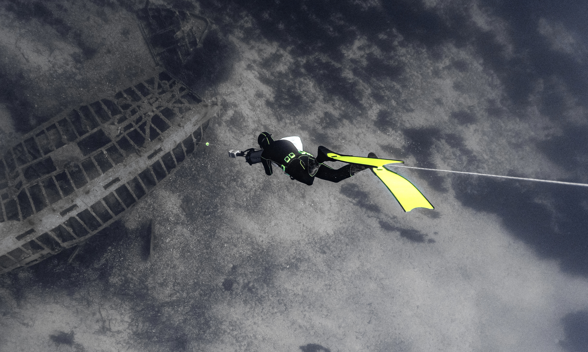
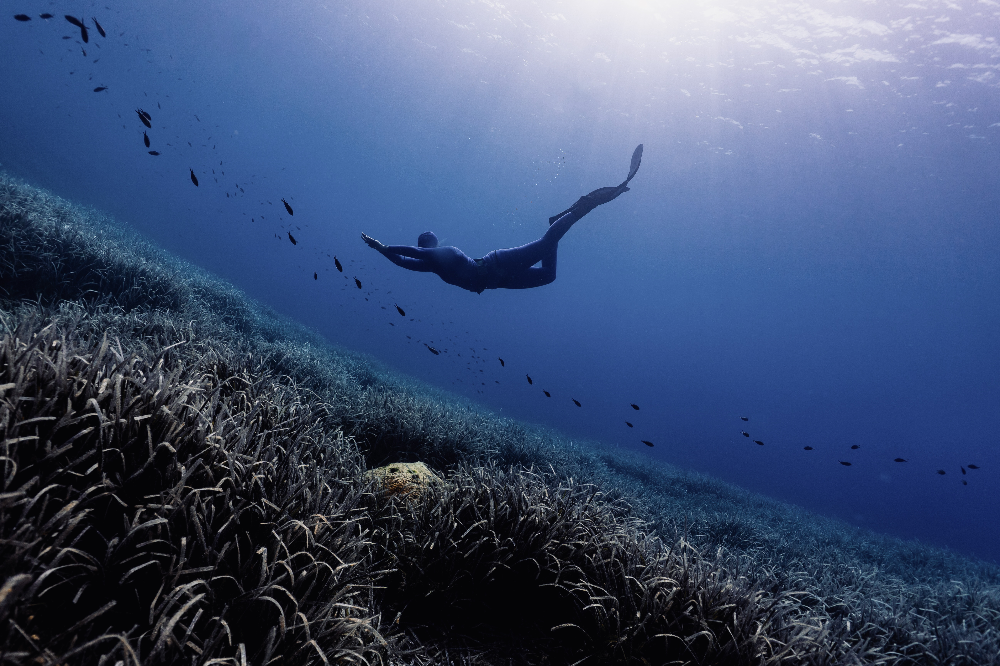
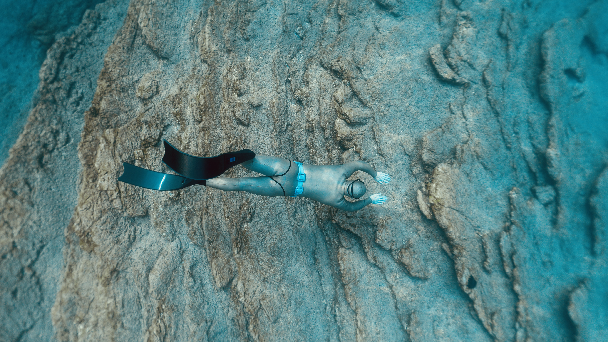
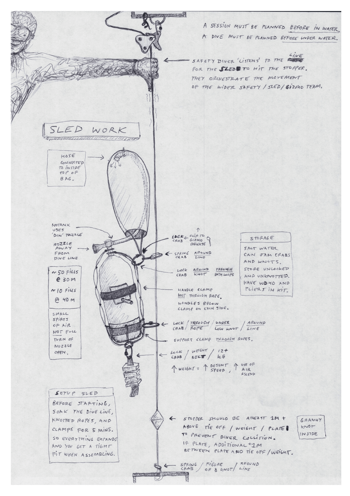
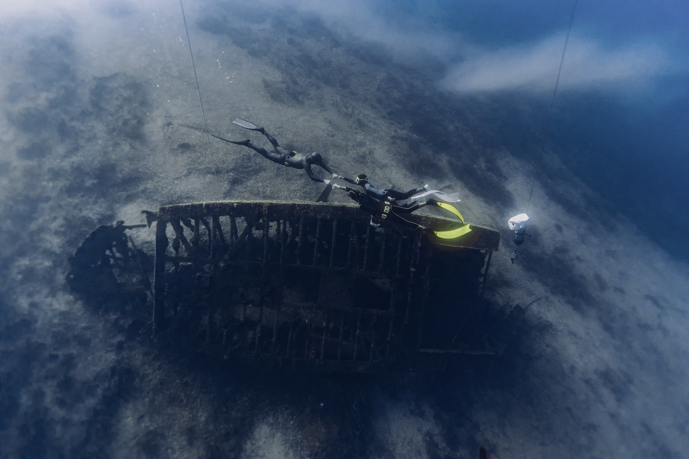

Freediving

Luke Demarest exploring open water shipwrecks. Photo by Marcus Greatwood.

Marine Biologist Nonnie Scott examines WWII mines and seagrass beds. Photo by Luke Demarest.

Dr. Andy MacLaran searches for sea cucumber. Photo by Luke Demarest.
World champion freediver Alice Hickson dives "Harry's Hole" swimthrough in Cornwall, England. Video by Luke Demarest.

Sled diving setup visual guide. Diagram by Luke Demarest.

Freediving team exploring open water shipwrecks. Photo by Marcus Greatwood.